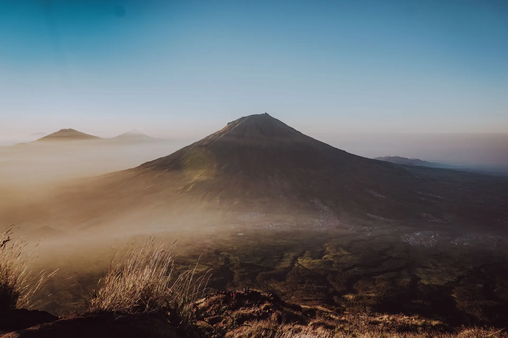

Izin Pendakian
Urus SIMAKSI atau booking online jauh hari. Kuota gunung populer cepat habis.

Kontak
hello@7summit.id
+62 812 0000 7777
Sosial Media

02 — Rute
Pos demi pos menuju tujuh puncak tertinggi Indonesia: ketinggian, estimasi waktu, dan titik camp di setiap jalur.
Pilih Gunung
Persiapan
Urus SIMAKSI atau booking online jauh hari. Kuota gunung populer cepat habis.
Kardio minimal 4 minggu sebelum berangkat. Jalur panjang menuntut daya tahan.
Catat titik air terakhir di jalur. Di atas itu, semua air harus kamu bawa sendiri.
Sebagian jalur mewajibkan pemandu desa. Hubungi basecamp jauh sebelum hari H.
Butuh pemandu atau mau ikut open trip? Ngobrol dulu sama tim kami.
Hubungi Kami